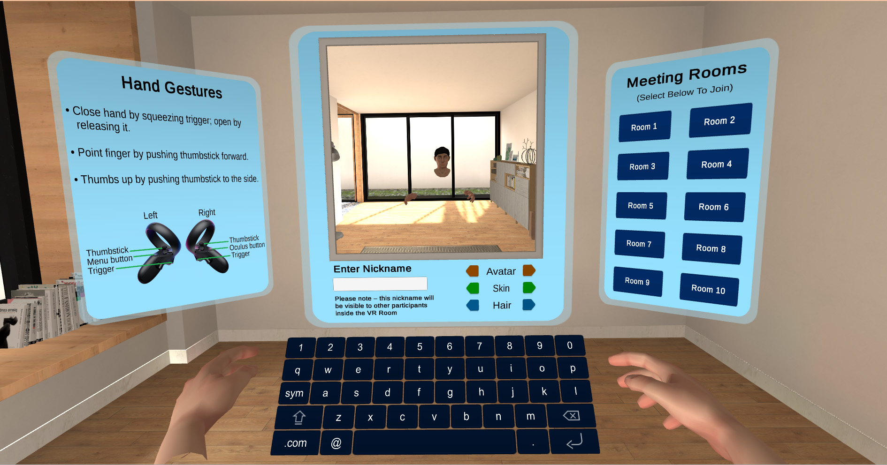
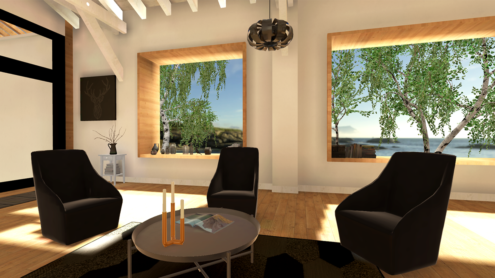
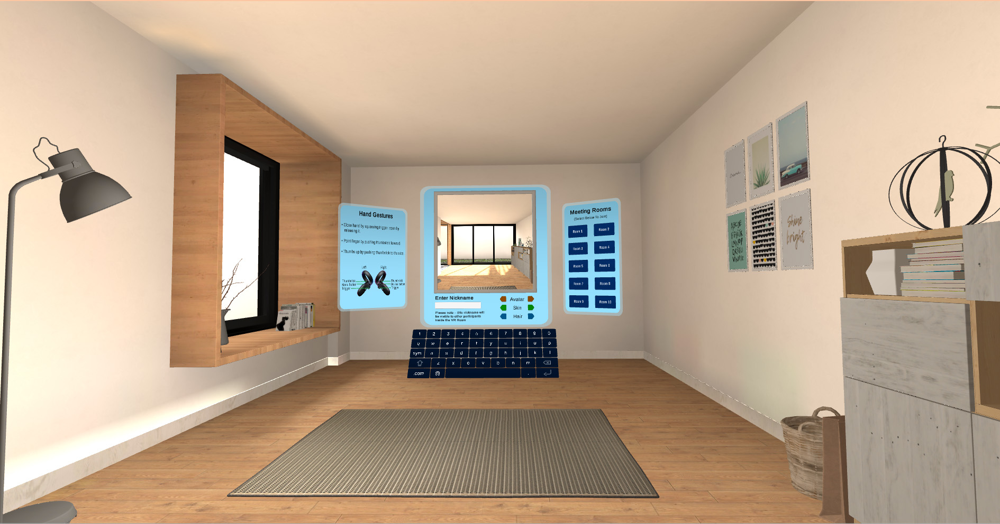

Embodied VR Therapy
Client: Foretell Reality (in collaboration with XR Health)
Role: 3D Artist, UI Designer
While working at Glimpse Group, I collaborated with Foretell Reality on their VR platform developed with XR Health. The platform was designed to enable virtual therapy and group sessions, creating safe and immersive environments for mental health care.
My Contributions
I crafted 3D environments, virtual avatars, and user interfaces to support a deeply embodied experience. From experimenting with realistic to stylized avatar styles, to designing intuitive UI, my work focused on making therapy sessions feel natural, engaging, and accessible in virtual space.


